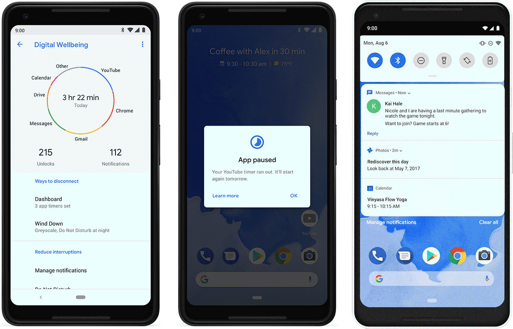
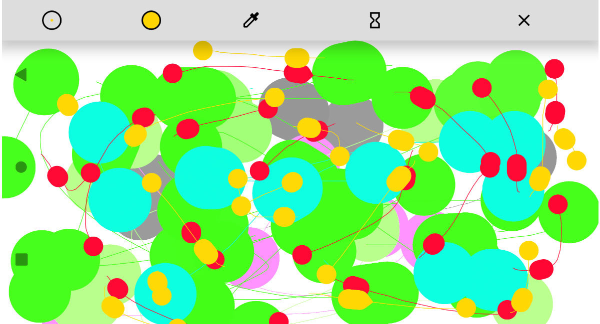

Android 9.0 Pie
La novena versión de Android es la de "la tarta", o el pastel, según cómo lo quieras traducir. Como en ocasiones anteriores, la versión final fue lanzada en agosto de 2018 tras cinco versiones beta, aunque en este caso no hubo revisión menor. Android Pie solo hay uno: la versión 9.0.
Durante las betas, especulamos que la P era de "privacidad", y es que Google introducía varios cambios en el sistema que limitaban que las apps usaran la cámara de fondo, pero los cambios se centraban más en modernizar Android. Llegaban así el brillo y la batería inteligente, las app actions y las slices, por las cuales el sistema intentaba anticiparse a lo que necesitabamos aprendiendo de nuestras pautas de uso.

El bienestar digital es otra de las grandes novedades, una serie de herramientas con las que puedes controlar el uso que haces del móvil aunque su uso aun no se ha extendido a todos los móviles con Pie. Por último, llegaba la navegación por gestos de forma oficial, la cual cambiaba para siempre la barra de navegación, simplificándola con un único botón en la mayoría de las ocasiones.

En cuanto al huevo de pascua de esta versión, la verdad es que todavía hoy no sabemos muy bien qué es. Es una especie de aplicación de dibujo, aunque el modo de dibujar es un poco psicodélico.